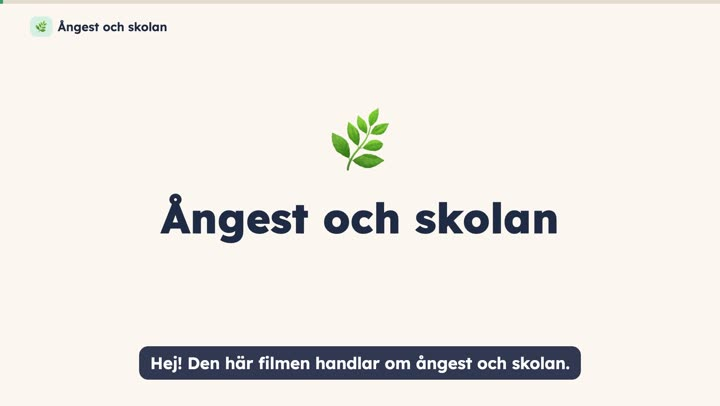
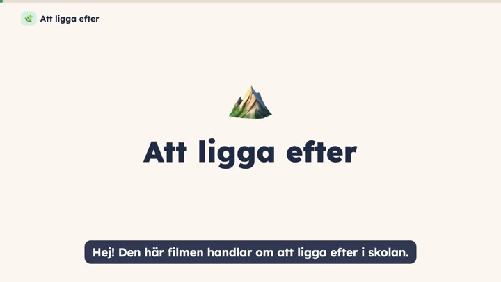
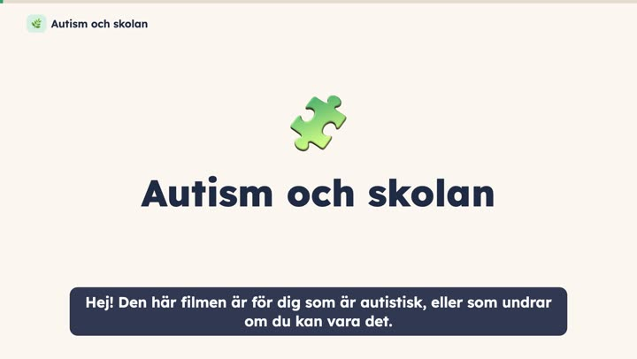
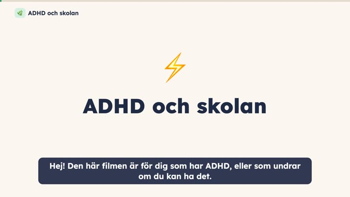
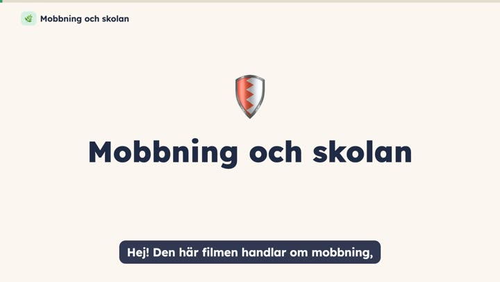
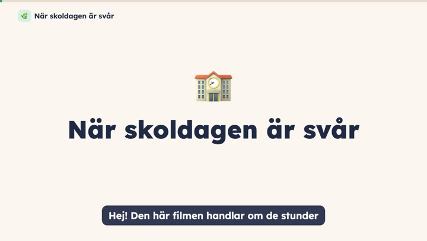

I din takt
Korta, lugna filmer om skolan. Titta i din egen takt, en del i taget, när du orkar. Det finns inga prov och inga poäng.
Skolämnen
Matematik, svenska och engelska, förklarat steg för steg.
Mående och skolan
När skolan känns tung. Lugna filmer med enkla idéer att prova.

Ångest och skolan
Kroppens larm, ångestcirkeln och små steg.

Att ligga efter
När det känns som att berget är för stort.

Autism och skolan
När skolan tar mer energi än för andra.

ADHD och skolan
När det är svårt att komma igång och hålla fokus.

Mobbning och skolan
Det är aldrig ditt fel, och du kan få hjälp.

När skoldagen är svår
Korridor, matsal, rast och mer: små ändringar som hjälper.